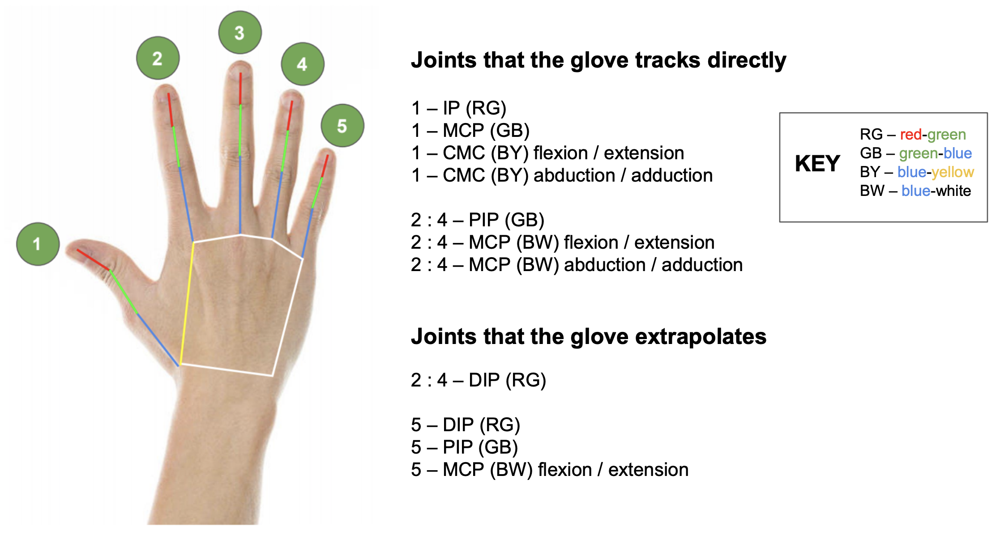

11 November 2020
The glove uses a combination of rotary potentiometers and flex sensors (like the ones found in the Nintendo Power Glove) to track the various joints on the hand. Our model of the human hand assumes 20 degrees of freedom (DOFs) plus 6 spatial DOFs. Although there is some debate surrounding the number of DOFs of the CMC joint on the thumb, we have assumed that is possesses only two. Technically, the axes along which we measure the CMC joint are not the simplest that one could construct — two orthogonal axes passing through the joint center — but nevertheless they span the state space of the CMC joint.

To achieve our goal of minimizing the cost of the glove, we have tried to use rotary potentiometers wherever possible, and use flex sensors only where necessary.
We chose to measure joint angles directly, with resistive sensors, as opposed to using a vision-based tracking method in order to avoid sensitivity to hand occlusion. Additionally, the frequency responses of our potentiometers and flex sensors are orders of magnitude above what the human hand is capable of, meaning the sensory system itself is a negligible source of lag. The sensor data processing algorithm has a similarly minimal lag, due to the electrical simplicity of reading resistive sensors: all it takes is an ADC reading followed by an approximately linear conversion from voltage-space to angle-space.
Measurement of hand orientation is done using a 3-axis accelerometer / gyroscope mounted within the white polygon shown above. All finger angle data is given in relative terms. As anyone who has ever worked on localization before can attest to, measuring the three translational DOFs is exponentially harder than measuring the three rotational DOFs. The state-of-the-art in global position tracking is inside-out tracking, the system currently used by the Oculus Quest. This is the gold standard in terms of user-experience since there are no base stations to set up or pesky calibration routines to perform. The aesthetic beauty of this system, however, comes at the designer's expense — such systems are notoriously difficult and time-consuming to implement. There is no question that the consumer version of our glove will use an inside-out system. However, early versions of the glove, including those delivered to beta testers, will likely use some combination of dead reckoning, outside-in, and inside-out global position tracking. The nature of that combination will of course shift towards inside-out as the development of the glove progresses.